library(tidyverse)
# descriptives
library(datawizard)
library(kableExtra)
library(skimr)
library(qqplotr)
library(gt)
# os
library(here)Introduction

The goal is to build a casual model using linear regression that explains quality of sleep, and logistic regression to explain sleep disorders
Data
We will be using data from a fictitious…
sleep <- here("data/sleep.csv") %>% read_csv(show_col_types = F) %>% janitor::clean_names()# checking the data
head(sleep) %>% gt() %>%
opt_stylize(style=6, color="blue")| person_id | gender | age | occupation | sleep_duration | quality_of_sleep | physical_activity_level | stress_level | bmi_category | blood_pressure | heart_rate | daily_steps | sleep_disorder |
|---|---|---|---|---|---|---|---|---|---|---|---|---|
| 1 | Male | 27 | Software Engineer | 6.1 | 6 | 42 | 6 | Overweight | 126/83 | 77 | 4200 | None |
| 2 | Male | 28 | Doctor | 6.2 | 6 | 60 | 8 | Normal | 125/80 | 75 | 10000 | None |
| 3 | Male | 28 | Doctor | 6.2 | 6 | 60 | 8 | Normal | 125/80 | 75 | 10000 | None |
| 4 | Male | 28 | Sales Representative | 5.9 | 4 | 30 | 8 | Obese | 140/90 | 85 | 3000 | Sleep Apnea |
| 5 | Male | 28 | Sales Representative | 5.9 | 4 | 30 | 8 | Obese | 140/90 | 85 | 3000 | Sleep Apnea |
| 6 | Male | 28 | Software Engineer | 5.9 | 4 | 30 | 8 | Obese | 140/90 | 85 | 3000 | Insomnia |
# shape of data
nrow(sleep)[1] 374ncol(sleep)[1] 13names(sleep) [1] "person_id" "gender"
[3] "age" "occupation"
[5] "sleep_duration" "quality_of_sleep"
[7] "physical_activity_level" "stress_level"
[9] "bmi_category" "blood_pressure"
[11] "heart_rate" "daily_steps"
[13] "sleep_disorder" Data cleaning
I observed the following issues in the data
Occupation variable having levels with very few counts. Those with few counts can be consolidated with similar categories.
The BMI category variable has both “Normal” and “Normal Weight” as levels. This is most likely as data entry error.
The heart rate variable is not in a suitable format to work with. I’ll extract the systolic blood pressure from the variable as an integer. I would not need the diastolic blood pressure as I observed strong multicollinearity between both diastolic and systolic blood pressure.
# observe occupations with low frequency counts
ggplot(sleep, aes(occupation))+geom_bar(fill="#25d366", color="black") + coord_flip()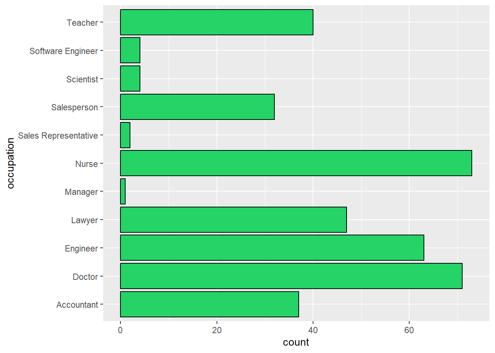
# observe data entry error in bmi_category variable
ggplot(sleep, aes(bmi_category))+geom_bar(fill="#25d366", color="black") + coord_flip()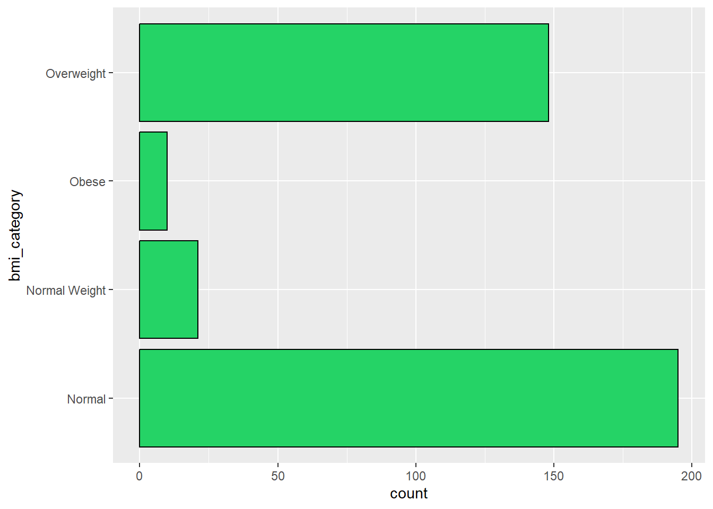
# regrouping occupation variable so that occupations with lower counts are consolidated with other similar occupations. Simultaneously correcting data entry error in bmi_category variable
sleep <- sleep %>% mutate(
occupation=ifelse(sleep$occupation %in% c("Software Engineer", "Scientist", "Engineer"),"Technical",
ifelse(sleep$occupation %in% c("Salesperson", "Sales Representative", "Manager"), "Sales", ifelse(sleep$occupation %in% c("Doctor", "Nurse"), "Medical",
as.character(occupation)))),
bmi_category = ifelse(sleep$bmi_category %in% c("Normal", "Normal Weight"), "Normal", as.character(sleep$bmi_category)))# extracting systolic blood pressure from the blood_pressure variable as it such a numeric variable is easier to work with. Subsequently dropping hear_rate variable
sleep <- sleep %>% mutate(
bp_sys= parse_number(str_sub(sleep$blood_pressure, 1, 3)),
person_id = as.character(person_id)
) %>% select(!heart_rate)# confirming changes
head(sleep) %>% gt() %>% opt_stylize(style=6, color="blue")| person_id | gender | age | occupation | sleep_duration | quality_of_sleep | physical_activity_level | stress_level | bmi_category | blood_pressure | daily_steps | sleep_disorder | bp_sys |
|---|---|---|---|---|---|---|---|---|---|---|---|---|
| 1 | Male | 27 | Technical | 6.1 | 6 | 42 | 6 | Overweight | 126/83 | 4200 | None | 126 |
| 2 | Male | 28 | Medical | 6.2 | 6 | 60 | 8 | Normal | 125/80 | 10000 | None | 125 |
| 3 | Male | 28 | Medical | 6.2 | 6 | 60 | 8 | Normal | 125/80 | 10000 | None | 125 |
| 4 | Male | 28 | Sales | 5.9 | 4 | 30 | 8 | Obese | 140/90 | 3000 | Sleep Apnea | 140 |
| 5 | Male | 28 | Sales | 5.9 | 4 | 30 | 8 | Obese | 140/90 | 3000 | Sleep Apnea | 140 |
| 6 | Male | 28 | Technical | 5.9 | 4 | 30 | 8 | Obese | 140/90 | 3000 | Insomnia | 140 |
# confirming changes to BMI category variable
ggplot(sleep, aes(bmi_category))+geom_bar(fill="#25d366", color="black") + coord_flip()
# confirming changes to occupation variable
ggplot(sleep, aes(occupation))+geom_bar(fill="#25d366", color="black") + coord_flip()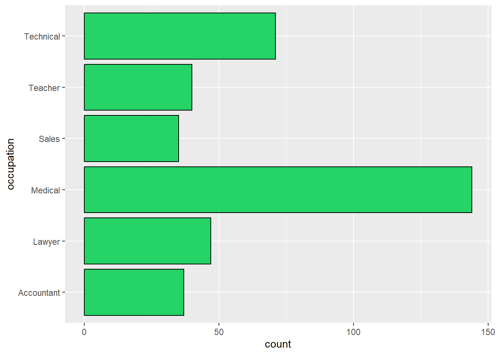
Summary statistics
We are going to explore summary statistics particularly for our variables of interest
# General statistics
sleep %>% skim() %>% gt() %>%
opt_stylize(style=6, color="gray") %>% fmt_number(decimals=2)| skim_type | skim_variable | n_missing | complete_rate | character.min | character.max | character.empty | character.n_unique | character.whitespace | numeric.mean | numeric.sd | numeric.p0 | numeric.p25 | numeric.p50 | numeric.p75 | numeric.p100 | numeric.hist |
|---|---|---|---|---|---|---|---|---|---|---|---|---|---|---|---|---|
| character | person_id | 0.00 | 1.00 | 1.00 | 3.00 | 0.00 | 374.00 | 0.00 | NA | NA | NA | NA | NA | NA | NA | NA |
| character | gender | 0.00 | 1.00 | 4.00 | 6.00 | 0.00 | 2.00 | 0.00 | NA | NA | NA | NA | NA | NA | NA | NA |
| character | occupation | 0.00 | 1.00 | 5.00 | 10.00 | 0.00 | 6.00 | 0.00 | NA | NA | NA | NA | NA | NA | NA | NA |
| character | bmi_category | 0.00 | 1.00 | 5.00 | 10.00 | 0.00 | 3.00 | 0.00 | NA | NA | NA | NA | NA | NA | NA | NA |
| character | blood_pressure | 0.00 | 1.00 | 6.00 | 6.00 | 0.00 | 25.00 | 0.00 | NA | NA | NA | NA | NA | NA | NA | NA |
| character | sleep_disorder | 0.00 | 1.00 | 4.00 | 11.00 | 0.00 | 3.00 | 0.00 | NA | NA | NA | NA | NA | NA | NA | NA |
| numeric | age | 0.00 | 1.00 | NA | NA | NA | NA | NA | 42.18 | 8.67 | 27.00 | 35.25 | 43.00 | 50.00 | 59.00 | ▆▆▇▃▅ |
| numeric | sleep_duration | 0.00 | 1.00 | NA | NA | NA | NA | NA | 7.13 | 0.80 | 5.80 | 6.40 | 7.20 | 7.80 | 8.50 | ▇▆▇▇▆ |
| numeric | quality_of_sleep | 0.00 | 1.00 | NA | NA | NA | NA | NA | 7.31 | 1.20 | 4.00 | 6.00 | 7.00 | 8.00 | 9.00 | ▁▇▆▇▅ |
| numeric | physical_activity_level | 0.00 | 1.00 | NA | NA | NA | NA | NA | 59.17 | 20.83 | 30.00 | 45.00 | 60.00 | 75.00 | 90.00 | ▇▇▇▇▇ |
| numeric | stress_level | 0.00 | 1.00 | NA | NA | NA | NA | NA | 5.39 | 1.77 | 3.00 | 4.00 | 5.00 | 7.00 | 8.00 | ▇▃▂▃▃ |
| numeric | daily_steps | 0.00 | 1.00 | NA | NA | NA | NA | NA | 6,816.84 | 1,617.92 | 3,000.00 | 5,600.00 | 7,000.00 | 8,000.00 | 10,000.00 | ▁▅▇▆▂ |
| numeric | bp_sys | 0.00 | 1.00 | NA | NA | NA | NA | NA | 128.55 | 7.75 | 115.00 | 125.00 | 130.00 | 135.00 | 142.00 | ▆▅▇▂▅ |
# Measures of spread
sleep %>% describe_distribution() %>% as_tibble() %>% select(Variable, Skewness, SD, Kurtosis) %>% gt() %>%
opt_stylize(style=6, color="blue") %>% fmt_number(decimals=2)| Variable | Skewness | SD | Kurtosis |
|---|---|---|---|
| age | 0.26 | 8.67 | −0.91 |
| sleep_duration | 0.04 | 0.80 | −1.29 |
| quality_of_sleep | −0.21 | 1.20 | −0.75 |
| physical_activity_level | 0.07 | 20.83 | −1.27 |
| stress_level | 0.15 | 1.77 | −1.33 |
| daily_steps | 0.18 | 1,617.92 | −0.39 |
| bp_sys | −0.04 | 7.75 | −0.89 |
Main Analyses
Associations
Research Question: “What strong associations exists between quality_of_sleep and other variables in the dataset?
# | warning: false
# | message: false
# packages required for associations
library(correlation)
library(GGally)# plotting the grid plot of scatterplots of numeric variables
ggscatmat(sleep %>% select_if(is.numeric)) + theme_light()
# showing relationships with strong correlations (greater than |+-0.4|)
correlates_tib <- sleep |>
select(where(is.numeric)) |>
correlation() %>% as.tibble() %>% select(!c(CI:df_error,Method,n_Obs)) %>% filter(abs(r) > 0.4) %>% arrange(r)
correlates_tib %>% gt() %>%
opt_stylize(style=6, color="blue") %>% fmt_number(decimals=3)| Parameter1 | Parameter2 | r | p |
|---|---|---|---|
| quality_of_sleep | stress_level | −0.899 | 0.000 |
| sleep_duration | stress_level | −0.811 | 0.000 |
| age | stress_level | −0.422 | 0.000 |
| age | quality_of_sleep | 0.474 | 0.000 |
| age | bp_sys | 0.606 | 0.000 |
| physical_activity_level | daily_steps | 0.773 | 0.000 |
| sleep_duration | quality_of_sleep | 0.883 | 0.000 |
# robust correlation analysis since the data are skewed. Results is filtered to include only relationships involving quality_of_sleep. Sorted ascendingly by p-value
correlates_tib <- sleep |>
select(where(is.numeric)) |>
correlation(method="percentage") %>% as.tibble() %>% select(!c(CI:df_error,Method,n_Obs)) %>% arrange(p) %>% filter( Parameter1 == "quality_of_sleep" | Parameter2 == "quality_of_sleep") %>% arrange(p) %>% filter(p < 0.05)
correlates_tib %>% gt() %>%
opt_stylize(style=6, color="blue") %>% fmt_number(decimals=3)| Parameter1 | Parameter2 | r | p |
|---|---|---|---|
| quality_of_sleep | stress_level | −0.910 | 0.000 |
| sleep_duration | quality_of_sleep | 0.892 | 0.000 |
| age | quality_of_sleep | 0.432 | 0.000 |
| quality_of_sleep | physical_activity_level | 0.178 | 0.005 |
Results
The most significant relationships (at alpha = .05) are the relationships between:
- quality of sleep and stress level, r(372) =-0.91, p < 0.0001
- quality of sleep and sleep duration, r(372) = 0.89, p < 0.0001
- quality of sleep and age, r(372) =0.43, p < 0.0001
- quality of sleep and physical activity level, r(372) =0.18, p = 0.0054
These are the variables we would fit to our linear regression model.
Fitting a GLM
Research Question: “Which GLM model best explains quality of sleep”
# importing needed packages
library(BayesFactor)
library(ggfortify)
library(parameters)
library(robust)
library(broom)
Initial Checks (Linearity)
ggscatmat(sleep, columns=c("stress_level", "sleep_duration","age", "physical_activity_level","quality_of_sleep"))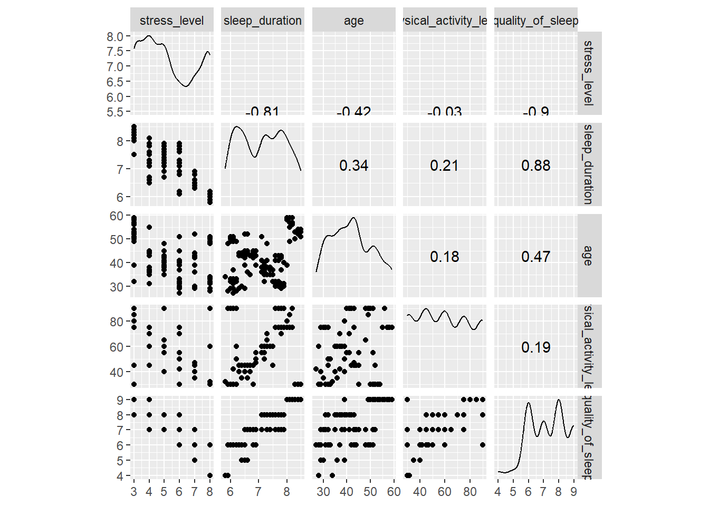
Interpretation
Looking at the bottom row of the plots, we see the scatterplot of all the variables against quality_of_sleep on the y_axis.
The four predictors have reasonably linear relationships with the sleep quality and there are no obvious outliers (except maybe in the bottom left of the scatterplot with band image). Across the diagonal, we see the distributions of scores. None of the variables have a normal distribution, exhibiting various degrees of modality.
If we look only at the predictors, then the highest correlation is between sleep duration and stress level which is significant at the 0.0001 level (r = -0.81). Focussing on the outcome variable, of all of the predictors, stress level and sleep duration correlate best with the outcome (rs = -0.9 and 0.88 respectively).
One predictor model
qs_lm_01 <- lm(data=sleep, formula = quality_of_sleep ~ stress_level)
# checking model fit
glance(qs_lm_01) %>% gt() %>%
opt_stylize(style=6, color="blue") %>% fmt_number(decimals=3)| r.squared | adj.r.squared | sigma | statistic | p.value | df | logLik | AIC | BIC | deviance | df.residual | nobs |
|---|---|---|---|---|---|---|---|---|---|---|---|
| 0.808 | 0.807 | 0.526 | 1,563.033 | 0.000 | 1.000 | −289.060 | 584.121 | 595.893 | 102.735 | 372.000 | 374.000 |
Stress level accounts for 80.8% of the variation in quality of sleep.
Therefore, we can say that adding the predictor of stress_level significantly improved the fit of the model to the data compared to having no predictors in the model, F(1, 372) = 1563.03, p < .001
Model parameters
tidy(qs_lm_01, conf.int = T) %>% gt() %>%
opt_stylize(style=6, color="blue") %>% fmt_number(decimals=3)| term | estimate | std.error | statistic | p.value | conf.low | conf.high |
|---|---|---|---|---|---|---|
| (Intercept) | 10.577 | 0.087 | 121.678 | 0.000 | 10.406 | 10.748 |
| stress_level | −0.606 | 0.015 | −39.535 | 0.000 | −0.636 | −0.576 |
If stress level increases by 1 point, quality_of_sleep reduces by more than half a point. This estimate is significant (p < 0.0000001). With the chance of being wrong 5% of the time, our estimate is going to be somewhere in the range [-0.636, -0.576]. This confidence interval does not cross zero, so we can be sure that a real effect exists.
# summary of the model parameters and fit
summary(qs_lm_01)
Call:
lm(formula = quality_of_sleep ~ stress_level, data = sleep)
Residuals:
Min 1Q Median 3Q Max
-1.7276 -0.1525 0.2413 0.2724 1.0600
Coefficients:
Estimate Std. Error t value Pr(>|t|)
(Intercept) 10.57739 0.08693 121.68 <2e-16 ***
stress_level -0.60623 0.01533 -39.53 <2e-16 ***
---
Signif. codes: 0 '***' 0.001 '**' 0.01 '*' 0.05 '.' 0.1 ' ' 1
Residual standard error: 0.5255 on 372 degrees of freedom
Multiple R-squared: 0.8078, Adjusted R-squared: 0.8072
F-statistic: 1563 on 1 and 372 DF, p-value: < 2.2e-16Multiple predictors
qs_lm_02 <- lm(quality_of_sleep ~ stress_level+sleep_duration+age+physical_activity_level, data=sleep)
# fit statistics
glance(qs_lm_02) %>% gt() %>%
opt_stylize(style=6, color="blue") %>% fmt_number(decimals=3)| r.squared | adj.r.squared | sigma | statistic | p.value | df | logLik | AIC | BIC | deviance | df.residual | nobs |
|---|---|---|---|---|---|---|---|---|---|---|---|
| 0.892 | 0.891 | 0.395 | 762.735 | 0.000 | 4.000 | −181.050 | 374.100 | 397.645 | 57.660 | 369.000 | 374.000 |
The % of variance explained by the predictors increased to 89% from our previous value of 81%.
In other words, sleep duration, age and physical activity level account for an additional 89% - 80.8% = 8.2% of the variance in quality of sleep. The difference between the \(R^2\) and the adjusted \(R^2\) is 0.8921-0.8909= 0.0012. Which means if the model were derived from the population rather than a sample we’d conclude that it accounted for approximately 0.12% less variance in the outcome.
Model parameter estimates
tidy(qs_lm_02, conf.int=T) %>% gt() %>%
opt_stylize(style=6, color="blue") %>% fmt_number(decimals=3)| term | estimate | std.error | statistic | p.value | conf.low | conf.high |
|---|---|---|---|---|---|---|
| (Intercept) | 3.957 | 0.439 | 9.023 | 0.000 | 3.095 | 4.819 |
| stress_level | −0.351 | 0.021 | −16.466 | 0.000 | −0.392 | −0.309 |
| sleep_duration | 0.621 | 0.046 | 13.372 | 0.000 | 0.529 | 0.712 |
| age | 0.014 | 0.003 | 5.180 | 0.000 | 0.009 | 0.019 |
| physical_activity_level | 0.004 | 0.001 | 3.796 | 0.000 | 0.002 | 0.006 |
Tip
Stress level : For every unit increase in stress level, quality of sleep reduces by 0.35 points. This interpretation is true only if the other variables are held constant.
Sleep duration: For every unit increase in sleep duration, quality of sleep increases by 0.62 points. This interpretation is true only if the other variables are held constant.
Age: For one year difference in the age of respondents, quality of sleep increases by 0.01 points. This interpretation is true only if the other variables are held constant.
Physical activity level: For every unit increase in sleep duration, quality of sleep increases by 0.004 points. This interpretation is true only if the other variables are held constant.
# standardized betas
model_parameters(qs_lm_02, standardize="refit") %>% gt() %>%
opt_stylize(style=6, color="blue") %>% fmt_number(decimals=3)| Parameter | Coefficient | SE | CI | CI_low | CI_high | t | df_error | p |
|---|---|---|---|---|---|---|---|---|
| (Intercept) | 0.000 | 0.017 | 0.950 | −0.034 | 0.034 | 0.000 | 369.000 | 1.000 |
| stress_level | −0.520 | 0.032 | 0.950 | −0.582 | −0.458 | −16.466 | 369.000 | 0.000 |
| sleep_duration | 0.413 | 0.031 | 0.950 | 0.352 | 0.473 | 13.372 | 369.000 | 0.000 |
| age | 0.100 | 0.019 | 0.950 | 0.062 | 0.137 | 5.180 | 369.000 | 0.000 |
| physical_activity_level | 0.070 | 0.018 | 0.950 | 0.034 | 0.106 | 3.796 | 369.000 | 0.000 |
# generating standard deviations to interpret standardised betas
sleep %>% select(stress_level, age, sleep_duration, physical_activity_level, quality_of_sleep) %>% skim() %>% as_tibble() %>% select(skim_variable, numeric.sd) %>% gt() %>%
opt_stylize(style=6, color="blue") %>% fmt_number(decimals=3)| skim_variable | numeric.sd |
|---|---|
| stress_level | 1.775 |
| age | 8.673 |
| sleep_duration | 0.796 |
| physical_activity_level | 20.831 |
| quality_of_sleep | 1.197 |
Tip
Stress level : As the stress level increases by 1 standard deviation (1.77 points), quality of sleep reduces by 0.52 standard deviations (0.52 × 1.197) = 0.622 points. This estimate is significant at alpha = .001 level. This interpretation is true only if the effects of airplay and advertising are held constant.
Sleep duration: As the sleep duration increases by 1 standard deviation (0.8 points), quality of sleep increases by 0.41 standard deviations (0.41 × 1.197) = 0.491 points. This estimate is significant at alpha = .001 level. This interpretation is true only if the effects of airplay and advertising are held constant.
Age: As age increases by 1 standard deviation (8.67 years), quality of sleep increases by 0.10 standard deviations (0.10 × 1.197) = 0.12 points. This estimate is significant at alpha = .001 level. This interpretation is true only if the effects of airplay and advertising are held constant.
Physical activity level: As the physical activity level increases by 1 standard deviation (20.83 points), quality of sleep increases by 0.07 standard deviations (0.07 × 1.197) = 0.08 points. This estimate is significant at alpha = .001 level. This interpretation is true only if the effects of airplay and advertising are held constant.
Comparing models
anova(qs_lm_01, qs_lm_02) %>% tidy() %>% gt() %>%
opt_stylize(style=6, color="blue") %>% fmt_number(decimals=3)| term | df.residual | rss | df | sumsq | statistic | p.value |
|---|---|---|---|---|---|---|
| quality_of_sleep ~ stress_level | 372.000 | 102.735 | NA | NA | NA | NA |
| quality_of_sleep ~ stress_level + sleep_duration + age + physical_activity_level | 369.000 | 57.660 | 3.000 | 45.076 | 96.155 | 0.000 |
Tip
We can say that qs_lm_02 significantly improved the fit of the model to the data compared to qs_lm_01, F(3, 369) = 96.16, p < .001.
Model diagnostics
Linearity and homoscedasticity
autoplot(qs_lm_02, which = c(1, 3),
colour = "#25d366",
smooth.colour = "#ef4836",
size = 1.5) + theme_minimal()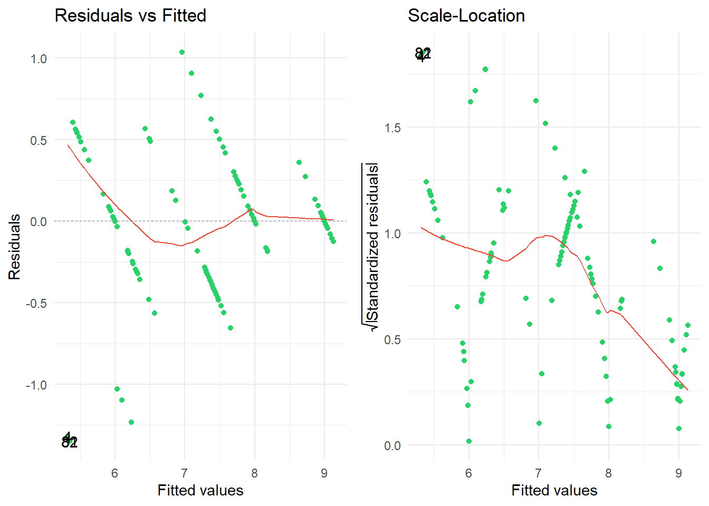
Linearity assumption is violated
Normality assumption
autoplot(qs_lm_02,
which = 2,
colour = "#25d366",
smooth.colour = "#ef4836",
size = 1.5) +
theme_minimal()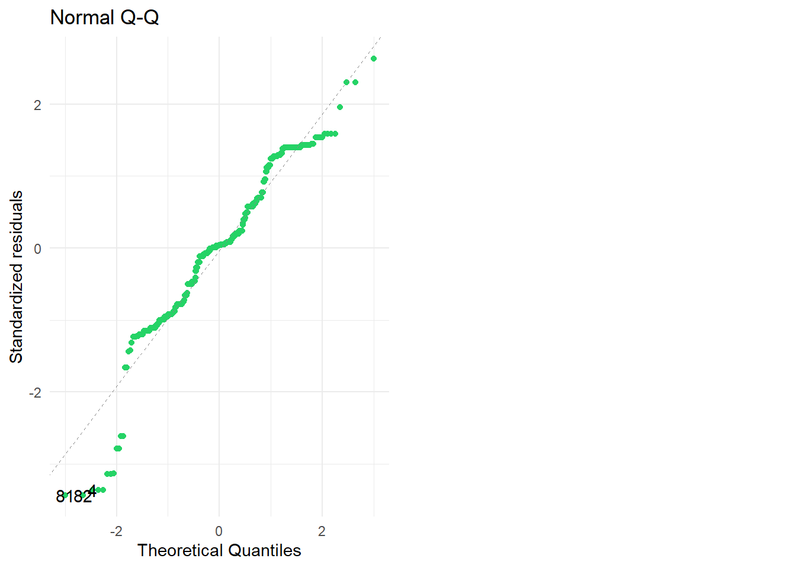
Normality assumption is violated
Outliers and Influential cases
# outlier cases
autoplot(qs_lm_02, which = c(4:6), colour = "#25d366",
smooth.colour = "#ef4836")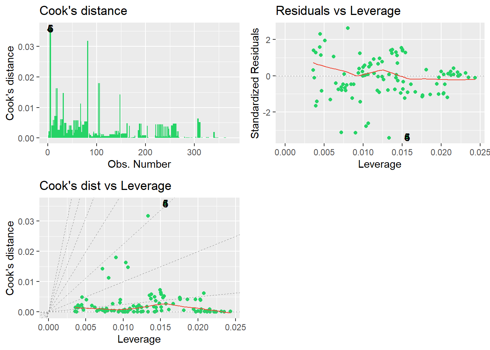
There seems to be outliers in the data. Let’s identify them in our dataset
qs_outliers <- qs_lm_02 |>
augment() |>
rowid_to_column(var = "case_no") |>
mutate(case_no = as.character(case_no)) %>%
filter(abs(.std.resid) >= 3)|>
arrange(.std.resid)
qs_outliers %>% gt() %>%
opt_stylize(style=6, color="blue") %>% fmt_number(decimals=3)| case_no | quality_of_sleep | stress_level | sleep_duration | age | physical_activity_level | .fitted | .resid | .hat | .sigma | .cooksd | .std.resid |
|---|---|---|---|---|---|---|---|---|---|---|---|
| 81 | 4.000 | 8.000 | 5.800 | 34.000 | 32.000 | 5.348 | −1.348 | 0.013 | 0.389 | 0.032 | −3.433 |
| 82 | 4.000 | 8.000 | 5.800 | 34.000 | 32.000 | 5.348 | −1.348 | 0.013 | 0.389 | 0.032 | −3.433 |
| 4 | 4.000 | 8.000 | 5.900 | 28.000 | 30.000 | 5.320 | −1.320 | 0.016 | 0.390 | 0.036 | −3.365 |
| 5 | 4.000 | 8.000 | 5.900 | 28.000 | 30.000 | 5.320 | −1.320 | 0.016 | 0.390 | 0.036 | −3.365 |
| 6 | 4.000 | 8.000 | 5.900 | 28.000 | 30.000 | 5.320 | −1.320 | 0.016 | 0.390 | 0.036 | −3.365 |
| 104 | 5.000 | 7.000 | 6.600 | 36.000 | 35.000 | 6.235 | −1.235 | 0.009 | 0.391 | 0.018 | −3.138 |
| 106 | 5.000 | 7.000 | 6.600 | 36.000 | 35.000 | 6.235 | −1.235 | 0.009 | 0.391 | 0.018 | −3.138 |
| 148 | 5.000 | 7.000 | 6.500 | 39.000 | 40.000 | 6.234 | −1.234 | 0.007 | 0.391 | 0.014 | −3.133 |
# outlier cases
qs_outliers %>% inner_join(sleep, by = join_by(case_no == person_id)) %>% select(c(1,7:24))# A tibble: 8 × 19
case_no .fitted .resid .hat .sigma .cooksd .std.resid gender age.y
<chr> <dbl> <dbl> <dbl> <dbl> <dbl> <dbl> <chr> <dbl>
1 81 5.35 -1.35 0.0133 0.389 0.0318 -3.43 Female 34
2 82 5.35 -1.35 0.0133 0.389 0.0318 -3.43 Female 34
3 4 5.32 -1.32 0.0156 0.390 0.0360 -3.36 Male 28
4 5 5.32 -1.32 0.0156 0.390 0.0360 -3.36 Male 28
5 6 5.32 -1.32 0.0156 0.390 0.0360 -3.36 Male 28
6 104 6.23 -1.23 0.00904 0.391 0.0180 -3.14 Male 36
7 106 6.23 -1.23 0.00904 0.391 0.0180 -3.14 Male 36
8 148 6.23 -1.23 0.00722 0.391 0.0143 -3.13 Male 39
# ℹ 10 more variables: occupation <chr>, sleep_duration.y <dbl>,
# quality_of_sleep.y <dbl>, physical_activity_level.y <dbl>,
# stress_level.y <dbl>, bmi_category <chr>, blood_pressure <chr>,
# daily_steps <dbl>, sleep_disorder <chr>, bp_sys <dbl># influential cases
qs_outliers <- qs_lm_02 |>
augment() |>
rowid_to_column(var = "case_no") |>
mutate(case_no = as.character(case_no)) %>%
filter(abs(.cooksd) > 1)|>
arrange(.std.resid)
qs_outliers# A tibble: 0 × 12
# ℹ 12 variables: case_no <chr>, quality_of_sleep <dbl>, stress_level <dbl>,
# sleep_duration <dbl>, age <dbl>, physical_activity_level <dbl>,
# .fitted <dbl>, .resid <dbl>, .hat <dbl>, .sigma <dbl>, .cooksd <dbl>,
# .std.resid <dbl>There are no influential cases
Assumption of Independence
car::durbinWatsonTest(qs_lm_02) lag Autocorrelation D-W Statistic p-value
1 0.4577484 1.083912 0
Alternative hypothesis: rho != 0Since the D-W statistic is not less than 1 or greater than 3, we can be fairly confident that this assumption is met.
Assumptions of Multicollinearity
car::vif(qs_lm_02) stress_level sleep_duration age
3.406796 3.256354 1.262757
physical_activity_level
1.153822 mean(car::vif(qs_lm_02))[1] 2.269932# tolerance
1/car::vif(qs_lm_02) stress_level sleep_duration age
0.2935310 0.3070919 0.7919178
physical_activity_level
0.8666849
Warning
If the largest VIF is greater than 10 then there is cause for concern (Bowerman & O’Connell, 1990; Myers, 1990). If the average VIF is substantially greater than 1 then the regression may be biased (Bowerman & O’Connell, 1990). Tolerance below 0.1 indicates a serious problem. Tolerance below 0.2 indicates a potential problem (Menard, 1995).
Since our average VIF is greater than 1, our model may be biased
Robust linear methods
Our model appears to be accurate for the sample and but not necessarily generalizable to the population because of some GLM assumption violations. Time to use robust methods!
Robust parameter estimates
Now we check for the significance of the test of bias and we compare their corresponding coefficients.
qs_lm_rob <- lmRob(quality_of_sleep ~ stress_level+sleep_duration+age+physical_activity_level, data = sleep, na.action = na.exclude)
summary(qs_lm_rob)
Call:
lmRob(formula = quality_of_sleep ~ stress_level + sleep_duration +
age + physical_activity_level, data = sleep, na.action = na.exclude)
Residuals:
Min 1Q Median 3Q Max
-1.105750 -0.034463 0.004544 0.572389 1.344101
Coefficients:
Estimate Std. Error t value Pr(>|t|)
(Intercept) 8.5862994 0.1278987 67.134 < 2e-16 ***
stress_level -0.5876346 0.0057227 -102.686 < 2e-16 ***
sleep_duration 0.0989499 0.0137276 7.208 3.23e-12 ***
age 0.0060295 0.0006261 9.630 < 2e-16 ***
physical_activity_level 0.0138005 0.0003576 38.589 < 2e-16 ***
---
Signif. codes: 0 '***' 0.001 '**' 0.01 '*' 0.05 '.' 0.1 ' ' 1
Residual standard error: 0.1386 on 369 degrees of freedom
Multiple R-Squared: 0.4484
Test for Bias:
statistic p-value
M-estimate 13.08 0.02267
LS-estimate 10.10 0.07233qs_lm_rob <- lmRob(quality_of_sleep ~ stress_level+sleep_duration+age+physical_activity_level, data = sleep, na.action = na.exclude)
qs_lm_rob %>% tidy(conf.int=TRUE)# A tibble: 5 × 5
term estimate std.error statistic p.value
<chr> <dbl> <dbl> <dbl> <dbl>
1 (Intercept) 8.59 0.128 67.1 6.38e-209
2 stress_level -0.588 0.00572 -103. 1.73e-273
3 sleep_duration 0.0989 0.0137 7.21 3.23e- 12
4 age 0.00603 0.000626 9.63 9.92e- 20
5 physical_activity_level 0.0138 0.000358 38.6 1.38e-131summary(qs_lm_02)
Call:
lm(formula = quality_of_sleep ~ stress_level + sleep_duration +
age + physical_activity_level, data = sleep)
Residuals:
Min 1Q Median 3Q Max
-1.34804 -0.26046 0.01664 0.24112 1.03722
Coefficients:
Estimate Std. Error t value Pr(>|t|)
(Intercept) 3.957065 0.438560 9.023 < 2e-16 ***
stress_level -0.350549 0.021289 -16.466 < 2e-16 ***
sleep_duration 0.620714 0.046420 13.372 < 2e-16 ***
age 0.013736 0.002652 5.180 3.66e-07 ***
physical_activity_level 0.004006 0.001055 3.796 0.000172 ***
---
Signif. codes: 0 '***' 0.001 '**' 0.01 '*' 0.05 '.' 0.1 ' ' 1
Residual standard error: 0.3953 on 369 degrees of freedom
Multiple R-squared: 0.8921, Adjusted R-squared: 0.8909
F-statistic: 762.7 on 4 and 369 DF, p-value: < 2.2e-16There is reason to believe that our original model, qs_lm_02, is biased. First, the M-estimate is significant
Bayesian approaches
qs_bf <- BayesFactor::regressionBF(quality_of_sleep ~ stress_level + sleep_duration + age + physical_activity_level, rscaleCont = "medium", data = sleep)
summary(qs_bf)Bayes factor analysis
--------------
[1] stress_level : 1.238909e+131 ±0.01%
[2] sleep_duration : 1.8428e+120 ±0.01%
[3] age : 1.375858e+19 ±0%
[4] physical_activity_level : 104.9573 ±0.01%
[5] stress_level + sleep_duration : 4.33176e+165 ±0%
[6] stress_level + age : 1.669112e+134 ±0%
[7] stress_level + physical_activity_level : 2.590168e+141 ±0%
[8] sleep_duration + age : 4.273726e+131 ±0%
[9] sleep_duration + physical_activity_level : 6.433615e+118 ±0%
[10] age + physical_activity_level : 2.418886e+19 ±0%
[11] stress_level + sleep_duration + age : 2.151821e+171 ±0%
[12] stress_level + sleep_duration + physical_activity_level : 6.037683e+168 ±0%
[13] stress_level + age + physical_activity_level : 6.086042e+142 ±0%
[14] sleep_duration + age + physical_activity_level : 2.12722e+130 ±0%
[15] stress_level + sleep_duration + age + physical_activity_level : 8.470484e+172 ±0%
Against denominator:
Intercept only
---
Bayes factor type: BFlinearModel, JZSThe best model is model 15 since it has largest Bayes Factor of 8.47 ^42
Results
The model that included stress level, sleep duration, age and physical activity level performed better than the model that only included stress level. The final model explained 44.8% of the variance in sleep quality. Stress level significantly predicted sleep quality = -0.59, t(369) = 67.1, p < 0.001, as did sleep duration = 0.1, t(369) = 38.6, p < 0.001.
Moderation and mediation analysis
Research questions:
Is the relationship between sleep duration and quality of sleep moderated by sleep disorder?
Is the relationship between stress level and quality of sleep moderated by occupation?
Is the relationship between physical activity and quality of sleep mediated by daily steps?
Is the relationship between sleep duration and quality of sleep moderated by sleep disorder?
# Visualizing the relationship of the three variables
ggplot(sleep, aes(x = sleep_duration, y = quality_of_sleep, color = sleep_disorder)) +
geom_jitter(size=1, alpha=0.8) +
labs(x = "Sleep duration", y = "Quality of sleep", color = "Sleep disorder") +
geom_smooth(method = "lm", se = FALSE, linewidth=0.9) + theme_bw()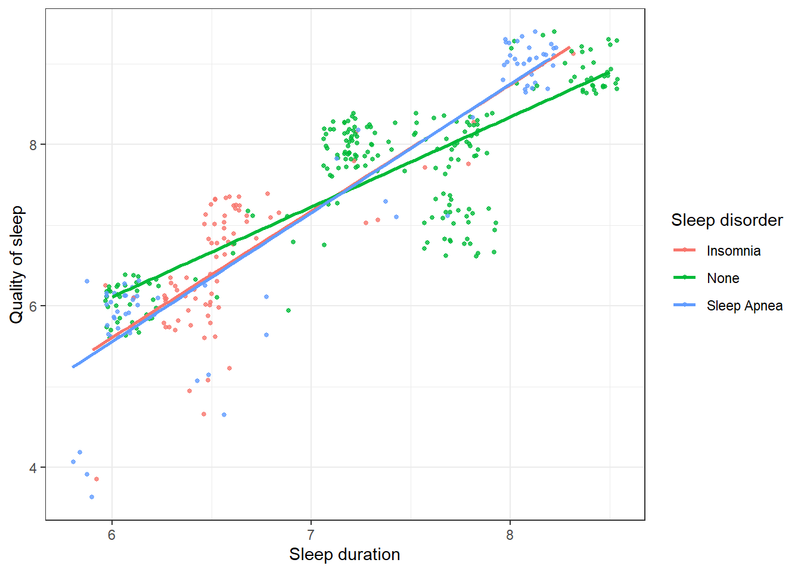
The plot shows that there might be some moderation effects.
# making sleep_disorder a factor variable and setting the base level to "None"
sleep <- sleep %>% mutate(
sleep_disorder = as_factor(sleep_disorder) %>% fct_relevel("None")
)qs_lm_03 <- lm(quality_of_sleep ~ sleep_duration * sleep_disorder, data=sleep)
qs_lm_03 %>% tidy() %>% gt() %>%
opt_stylize(style=6, color="blue")| term | estimate | std.error | statistic | p.value |
|---|---|---|---|---|
| (Intercept) | -0.5750673 | 0.36703899 | -1.566774 | 1.180269e-01 |
| sleep_duration | 1.1144522 | 0.04963586 | 22.452560 | 6.124844e-71 |
| sleep_disorderSleep Apnea | -3.4341228 | 0.57712441 | -5.950403 | 6.233752e-09 |
| sleep_disorderInsomnia | -3.2040380 | 1.11193745 | -2.881491 | 4.190005e-03 |
| sleep_duration:sleep_disorderSleep Apnea | 0.4802913 | 0.08000178 | 6.003508 | 4.632039e-09 |
| sleep_duration:sleep_disorderInsomnia | 0.4503706 | 0.16657925 | 2.703642 | 7.176641e-03 |
Interpretation
Tip
The effect of increasing sleep duration in someone with no sleep disorder on sleep quality is 1.11
The effect of sleep apnea on sleep quality compared to someone with no disorders is -3.43
The effect of Insomnia on sleep quality compared to someone with no disorders is -3.20
The effect of increasing sleep duration in someone with sleep anea on sleep quality compared to someone with no disorders is 0.48
The effect of increasing sleep duration in someone with insomnia on sleep quality compared to someone with no disorders is 0.45
interactions::sim_slopes(
qs_lm_03,
pred = sleep_duration,
modx = sleep_disorder,
jnplot = TRUE,
robust = TRUE,
confint = TRUE
)SIMPLE SLOPES ANALYSIS
Slope of sleep_duration when sleep_disorder = Insomnia:
Est. S.E. 2.5% 97.5% t val. p
------ ------ ------ ------- -------- ------
1.56 0.15 1.26 1.86 10.26 0.00
Slope of sleep_duration when sleep_disorder = Sleep Apnea:
Est. S.E. 2.5% 97.5% t val. p
------ ------ ------ ------- -------- ------
1.59 0.06 1.48 1.71 27.35 0.00
Slope of sleep_duration when sleep_disorder = None:
Est. S.E. 2.5% 97.5% t val. p
------ ------ ------ ------- -------- ------
1.11 0.03 1.05 1.17 36.50 0.00The slopes for the three regressions are not significantly different
interactions::interact_plot(
qs_lm_03,
pred = sleep_duration,
modx = sleep_disorder,
interval = TRUE,
robust = TRUE,
legend.main = "Sleep disorder"
)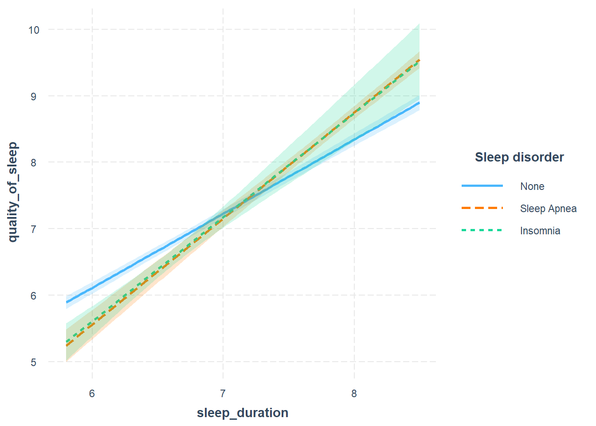
Looking at the slope, we can that the moderation effect is not significant.
Conclusion
Sleep disorder is not a moderator of the relationship between sleep duration and quality of sleep
Is the relationship between stress level and quality of sleep moderated by occupation?
qs_lm_04 <- lm(quality_of_sleep ~ stress_level * occupation, data=sleep)
qs_lm_04 %>% tidy() %>% gt() %>%
opt_stylize(style=6, color="blue")| term | estimate | std.error | statistic | p.value |
|---|---|---|---|---|
| (Intercept) | 9.3661417 | 0.22464236 | 41.6935685 | 2.847324e-140 |
| stress_level | -0.3208661 | 0.04725953 | -6.7894487 | 4.624546e-11 |
| occupationLawyer | 3.3611310 | 1.08304354 | 3.1034126 | 2.063488e-03 |
| occupationMedical | 1.3637168 | 0.24305144 | 5.6108156 | 4.008125e-08 |
| occupationSales | 3.5481440 | 1.02746628 | 3.4532948 | 6.193572e-04 |
| occupationTeacher | -0.2842770 | 0.33263086 | -0.8546322 | 3.933200e-01 |
| occupationTechnical | 2.0623438 | 0.25972133 | 7.9406026 | 2.559029e-14 |
| stress_level:occupationLawyer | -0.6336793 | 0.21426067 | -2.9575158 | 3.304916e-03 |
| stress_level:occupationMedical | -0.2851357 | 0.04939422 | -5.7726532 | 1.679151e-08 |
| stress_level:occupationSales | -0.6791339 | 0.15058782 | -4.5098857 | 8.775327e-06 |
| stress_level:occupationTeacher | -0.1447393 | 0.07087144 | -2.0422799 | 4.184795e-02 |
| stress_level:occupationTechnical | -0.4718021 | 0.05572917 | -8.4659819 | 6.415721e-16 |
interactions::sim_slopes(
qs_lm_04,
pred = stress_level,
modx = occupation,
jnplot = TRUE,
robust = TRUE,
confint = TRUE
)SIMPLE SLOPES ANALYSIS
Slope of stress_level when occupation = Lawyer:
Est. S.E. 2.5% 97.5% t val. p
------- ------ ------- ------- -------- ------
-0.95 0.03 -1.02 -0.89 -29.71 0.00
Slope of stress_level when occupation = Accountant:
Est. S.E. 2.5% 97.5% t val. p
------- ------ ------- ------- -------- ------
-0.32 0.04 -0.40 -0.24 -7.92 0.00
Slope of stress_level when occupation = Teacher:
Est. S.E. 2.5% 97.5% t val. p
------- ------ ------- ------- -------- ------
-0.47 0.09 -0.65 -0.28 -5.01 0.00
Slope of stress_level when occupation = Sales:
Est. S.E. 2.5% 97.5% t val. p
------- ------ ------- ------- -------- ------
-1.00 1.04 -3.04 1.04 -0.97 0.33
Slope of stress_level when occupation = Medical:
Est. S.E. 2.5% 97.5% t val. p
------- ------ ------- ------- -------- ------
-0.61 0.01 -0.62 -0.59 -81.54 0.00
Slope of stress_level when occupation = Technical:
Est. S.E. 2.5% 97.5% t val. p
------- ------ ------- ------- -------- ------
-0.79 0.07 -0.93 -0.65 -10.97 0.00interactions::interact_plot(
qs_lm_04,
pred = stress_level,
modx = occupation,
interval = TRUE,
robust = TRUE,
legend.main = "Occupation"
)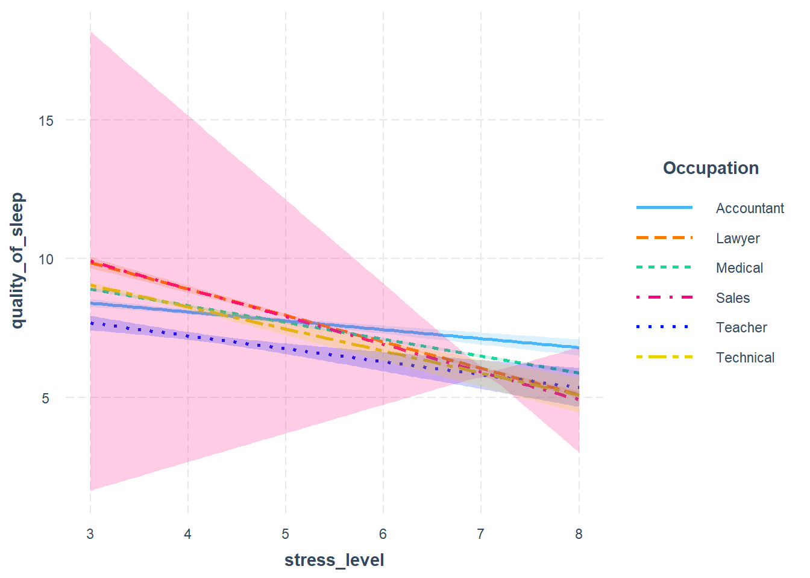
Again, we do not observe a significant moderation effect of occupation on the relationship between stress level and quality of sleep
Is the relationship between physical activity and quality of sleep mediated by daily steps?
To test this, we are going to run 3 regressions:
The total effect of
physical_activity_levelonquality_of_sleep.The effect of
physical_activity_levelonquality_of_sleepthat is mediated bydaily_steps, a.k.a. the indirect effectThe effect of
physical_activity_levelonquality_of_sleepthat is not mediated bydaily_steps, a.k.a. the direct effect
Total effect
We first determine the total effect by running a regression of physical_activity_level on quality_of_sleep (without including daily_steps):
lm(quality_of_sleep ~ physical_activity_level, sleep) %>% tidy() %>% gt() %>%
opt_stylize(style=6, color="blue") %>% fmt_number(decimals=3)| term | estimate | std.error | statistic | p.value |
|---|---|---|---|---|
| (Intercept) | 6.657 | 0.183 | 36.307 | 0.000 |
| physical_activity_level | 0.011 | 0.003 | 3.792 | 0.000 |
The total effect is approximately 0.011, meaning that an increase of one unit in physical activity increases sleep quality by 0.001 units on average, not holding daily steps constant.
Mediated/Indirect Effect
The effect of physical_activity_level on quality_of_sleep mediated by daily_steps can be obtained by multiplying together the effect of physical_activity_level on daily_steps and the effect of daily_steps on quality_of_sleep.
1. physical_activity_level on daily_steps (a)
lm(daily_steps ~ physical_activity_level, sleep) %>% tidy() %>% gt() %>%
opt_stylize(style=6, color="blue")| term | estimate | std.error | statistic | p.value |
|---|---|---|---|---|
| (Intercept) | 3265.57619 | 160.321889 | 20.36887 | 1.718735e-62 |
| physical_activity_level | 60.01692 | 2.556092 | 23.47995 | 1.968256e-75 |
One unit increase in physical_activity_level increases daily_steps by an average of 60 steps
2. daily_steps on quality_of_sleep
lm(quality_of_sleep ~ daily_steps + physical_activity_level, sleep) %>% tidy() %>% gt() %>%
opt_stylize(style=6, color="blue")| term | estimate | std.error | statistic | p.value |
|---|---|---|---|---|
| (Intercept) | 7.4500815511 | 2.609352e-01 | 28.551459 | 1.151887e-95 |
| daily_steps | -0.0002428667 | 5.802065e-05 | -4.185867 | 3.551189e-05 |
| physical_activity_level | 0.0256601109 | 4.506428e-03 | 5.694113 | 2.524969e-08 |
(a * b) = 60.07 * -0.00024 = -0.0144
Direct Effect
This is simply the coefficient of physical_activity_level in the above regression = 0.0257
According to Zhao et al., what we have here isCompetitive Mediation (Regularly Partial Mediation)
In the competitive partial mediation hypothesis, it is assumed that the intermediate variable (daily_steps) could sometimes increase and at times decrease the relationship between the independent and dependent variables. i.e an “inconsistent” model.

Difference in means
Research question: are significant differences in the mean sleep quality of both male and female participants
# summary statistics of quality_of_sleep by gender
by(cbind(data=sleep$quality_of_sleep), sleep$gender, psych::describe)INDICES: Female
vars n mean sd median trimmed mad min max range skew kurtosis se
data 1 185 7.66 1.28 8 7.76 1.48 4 9 5 -0.49 -0.83 0.09
------------------------------------------------------------
INDICES: Male
vars n mean sd median trimmed mad min max range skew kurtosis se
data 1 189 6.97 1 7 7.01 1.48 4 9 5 -0.35 -0.59 0.07The mean of female participants is one point higher than males. But is this difference significant?
# plotting a violin-errorbar plot to visualise the relationship
ggplot(sleep, aes(gender,quality_of_sleep))+
geom_violin() +
stat_summary(fun.data="mean_cl_normal") +
theme_minimal()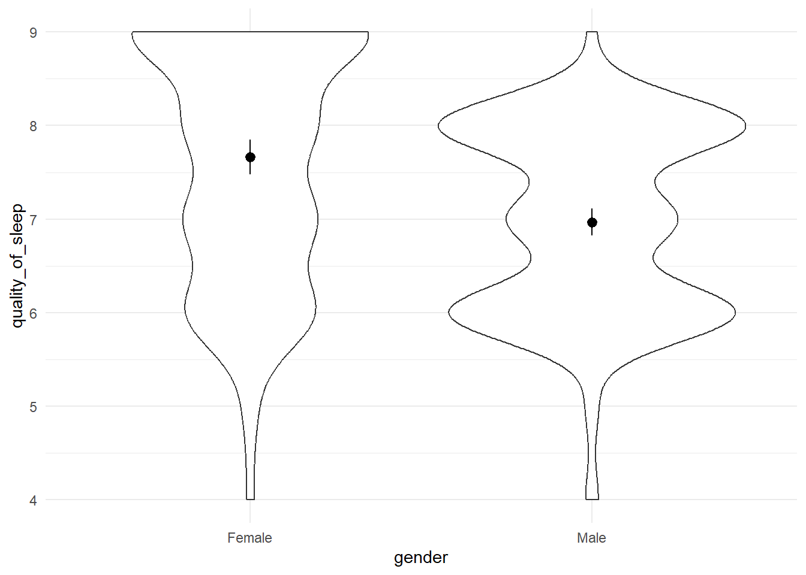
Since the errorbars do not overlap, we can be fairly confident that the difference is significant. Lets confirm this hunch with a Welsh’s t-test.
t.test(quality_of_sleep ~ gender,
data = sleep,
paired = FALSE,
var.equal = FALSE,
conf.level = 0.95,
na.action = na.exclude)
Welch Two Sample t-test
data: quality_of_sleep by gender
t = 5.8593, df = 347.96, p-value = 1.078e-08
alternative hypothesis: true difference in means between group Female and group Male is not equal to 0
95 percent confidence interval:
0.4627786 0.9304432
sample estimates:
mean in group Female mean in group Male
7.664865 6.968254 Because the p-value = 1.078e-08 is less than our alpha of .05, we can conclude that the difference between both genders is significant. Also, since the confidence interval expressing the true difference in means does not cross zero, we can be confident that there exists a true difference, with a chance of us being wrong 5% of the time.
effectsize::cohens_d(quality_of_sleep ~ gender, data = sleep) %>% gt() %>%
opt_stylize(style=6, color="blue") %>% fmt_number(decimals=3)| Cohens_d | CI | CI_low | CI_high |
|---|---|---|---|
| 0.608 | 0.950 | 0.400 | 0.815 |
Tip
On average, female participants have better sleep quality (M = 7.66, SE = 0.09), than those not given a cloak (M = 6.97, SE = 0.07). Sleep quality is significantly different for both genders: the mean difference, M = 0.69, 95% CI [0.46, 0.93], was significantly different from 0, t(347.96) = 5.85, p = 01.078e-08. This effect was quite large, d= 0.61[0.4, 0.82]
Conclusion
I created this post as a way of solidifying my understanding of these concepts. I find that documenting the material helps it to stick iwth me better. I hope that you find this helpful. My deepest gratitude goes to Andy Field for his exceptional book on statistical analysis with R.